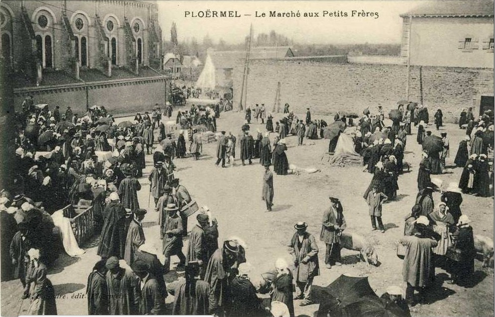
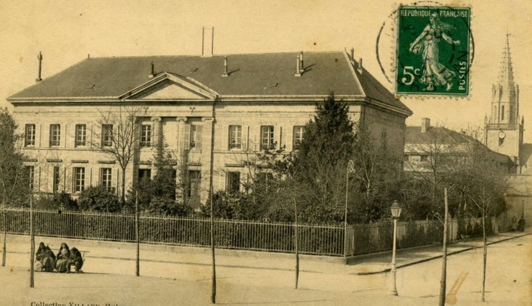
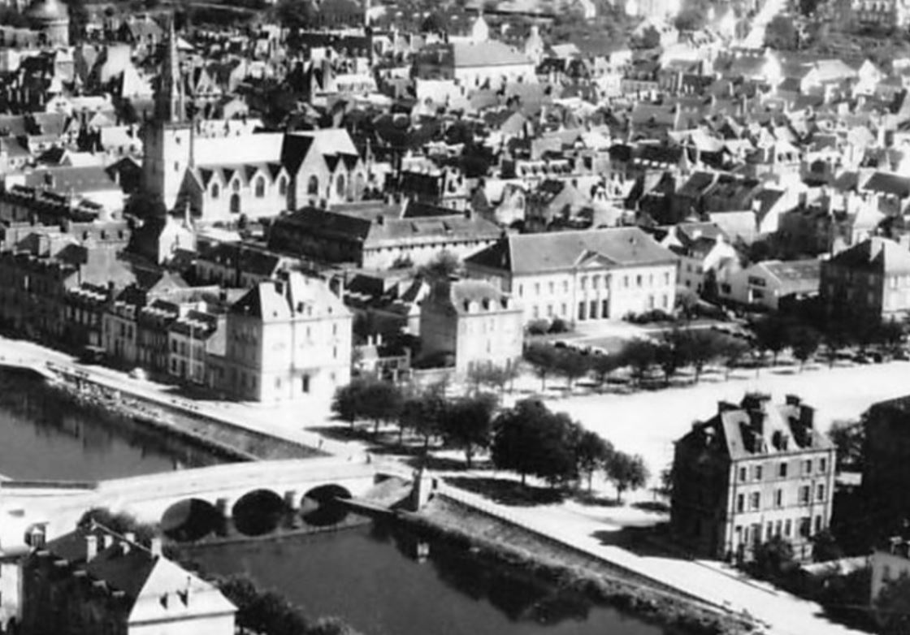
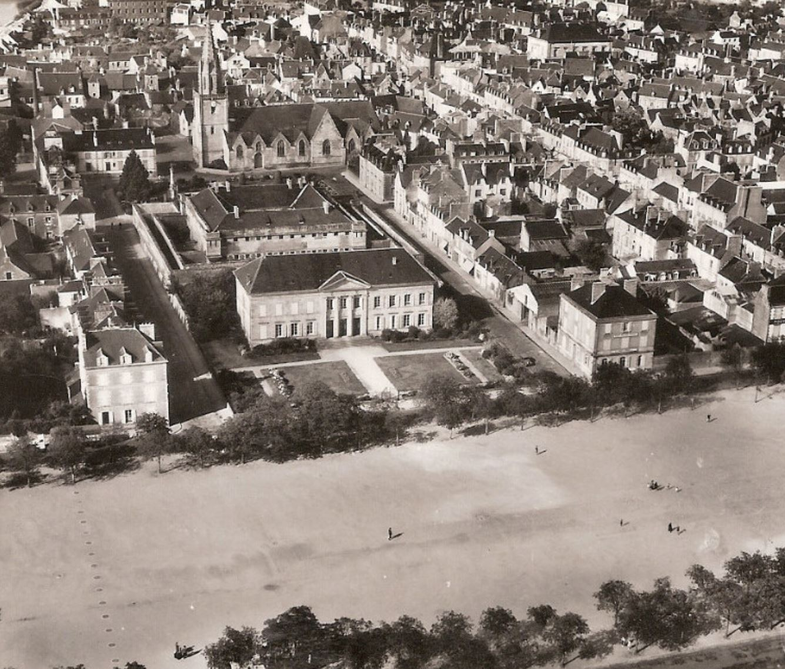
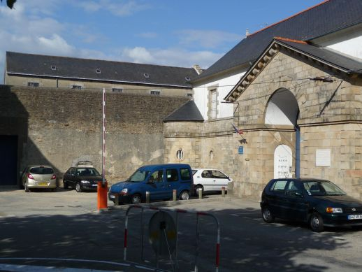
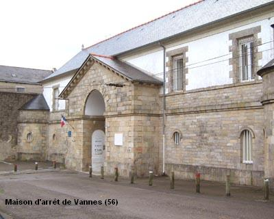
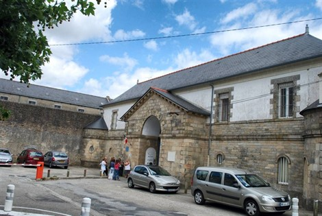

| Département | Images | Ville | Nom | Adresse | Période | Capacité | Histoire du lieu | Nombre d'exécutions |
| Morbihan (56) | Lorient | Maison d'arrêt | Rue du Couëdic | 1826-1943 | Située à côté de la gendarmerie, dessinée par l'architecte de la Ville, Pierre Marie de Lussault. Détruite - comme la plupart des bâtiments de la rue - lors du bombardement du 15 janvier 1943, elle n'est pas reconstruite, et sur son emplacement, on dresse les nouveaux bâtiments d'une de ses anciennes voisines : la Banque de France. | Aucune exécution | ||
| Morbihan (56) | Lorient | Prison Frébault | Rue de Siam | 1944-1982 | 37 places, 12 surveillants (1962) | Achevée de construire en 1896, au terme de six ans de travaux, la vaste caserne Frébault était une fierté pour Lorient, avec notamment l'éclairage éléctrique dans chaque pièce de ces bâtiments confortables, destinés à héberger les hommes de l'Artillerie coloniale... Son existence militaire dure un peu moins de cinquante ans. Démolie dans sa quasi-totalité par les bombardements en 1943, le seul bâtiment resté debout et intact se retrouve voué à des fonctions pénitentiaires, pour remplacer l'ancienne maison d'arrêt, elle aussi détruite lors des bombardements. En 1961, les autres bâtiments délabrés sont complètement détruits pour construire lotissements et autres immeubles d'habitation. Cernée de maisons, désormais vieille et fort peu engageante voisine pour les riverains, la fermeture de la prison Frébault, envisagée en 1972, n'est qu'une question de temps. Le 26 juin 1974, quatre détenus s'en évadent, en parvenant à franchir le mur d'enceinte, pourtant haut de six mètres. En 1978 et 1979, d'importantes tempêtes délabrent encore un peu plus le toit de la prison. Le permis de construire pour un nouveau centre pénitentiaire dans la ville voisine de Ploemeur est délivré le 15 mai 1979. La nouvelle prison est enfin inaugurée le 08 mars 1982. La vieille caserne Frébault survit trois ans à sa désaffection, avant d'être démolie à son tour. A sa place se dresse l'actuelle résidence Siam. | Aucune exécution | |
| Morbihan (56) |  |
Ploermel | Maison d'arrêt | Place Sénéchal Perret | 1850-1926 | La commune rachète les bâtiments en 1935 pour 25.000 francs, et procéde à la démolition fin 1937. La poste se dresse à la place. | Aucune exécution | |
| Morbihan (56) |    |
Pontivy | Maison d'arrêt et de correction | Place du Clézio | 1813-1934 | A la différence de la plupart des "cités judiciaires", c'est la prison qui sort de terre la première, le palais de justice qui la jouxte ne verra le jour que trente ans plus tard, en 1846. Concernée par la fermeture de 1926, rouverte puis fermée à nouveau en 1934, puis une dernière fois de l'Occupation à 1952, date de sa désafection définitive. Les bâtiments en forme de carré, cernés par un chemin de ronde et un mur d'enceinte, sont finalement démolis en 1960. Le centre médico-social et l'actuel bureau de poste se dressent à sa place. En octobre 2017, le palais de justice lui aussi désaffecté est prévu pour être mis en vente par le Département pour une mise à prix entre 600.000 et 800.000 euros. | Aucune exécution | |
| Morbihan (56) |    |
Vannes | Prison Nazareth | 12, place Nazareth | En service depuis 1832 | 45 places, 15 surveillants (1962) | Autrefois, Vannes n'avait pas de prison à proprement parler, les détenus étaient indifféremment incarcérés dans des cachots situés dans les tours du mur d'enceinte de la ville, dans des conditions affreuses. Récupéré par l'Etat durant la Révolution, l'ancien Carmel de Vannes se voit donc confier un rôle pénitentiaire dès 1825, même si les premiers détenus s'installent dans les bâtiments en 1830. Composée d'un quadrilatère autour d'une chapelle, dessinée par l'architecte Brunet Debaines, la prison est grande : elle a un statut de maison d'arrêt, mais également de centrale pour femmes. Le 07 juin 1871, une détenue, Marie Quiniou, incarcérée pour sept ans pour vol, met le feu à la prison en mettant des braises dans des paquets de chiffons, causant la mort d'une co-détenue par asphyxie (aucune certitude absolue), mais surtout la destruction presque entière des bâtiments, forçant l'évacuation de près de 320 condamnées et des quelques 85 détenus de la maison d'arrêt ! Condamnée à perpétuité et enfermée à Rennes, Marie Quiniou récidivera en incendiant la centrale de Rennes, ce qui lui vaudra une condamnation capitale. Graciée, elle sera envoyée à Clermont, et placée à l'isolement parce qu'elle menace à voix haute devant ses co-détenues de récidiver une fois de plus ! L'incendie changera définitivement la configuration des lieux, les chantiers successifs ne faisant que transformer encore et encore l'ancienne prison. En 2010, décision est prise de faire fermer la prison, vétuste et petite. En 2017, le ministère de la Justice sélectionne la ville comme l'une des futures communes d'implantation d'un nouveau centre pénitentiaire, signifiant désormais à moyen terme la fermeture de la vieille prison de centre-ville. | Deux exécutions en 1930 et 1942. |
{kind=link}
{kind=link}
{kind=link}
{kind=link}
{kind=link}
{kind=link}
{kind=link}